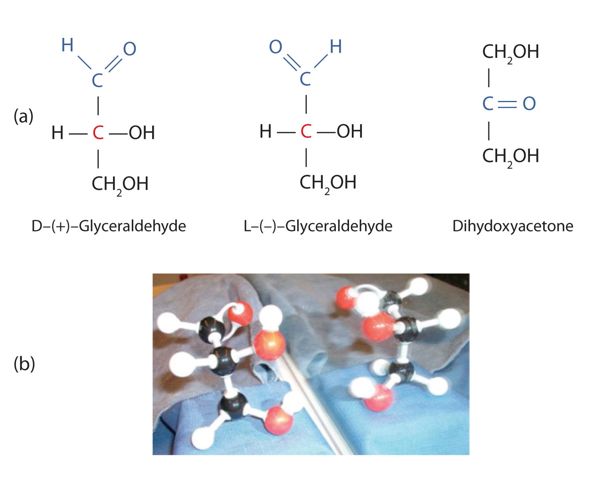
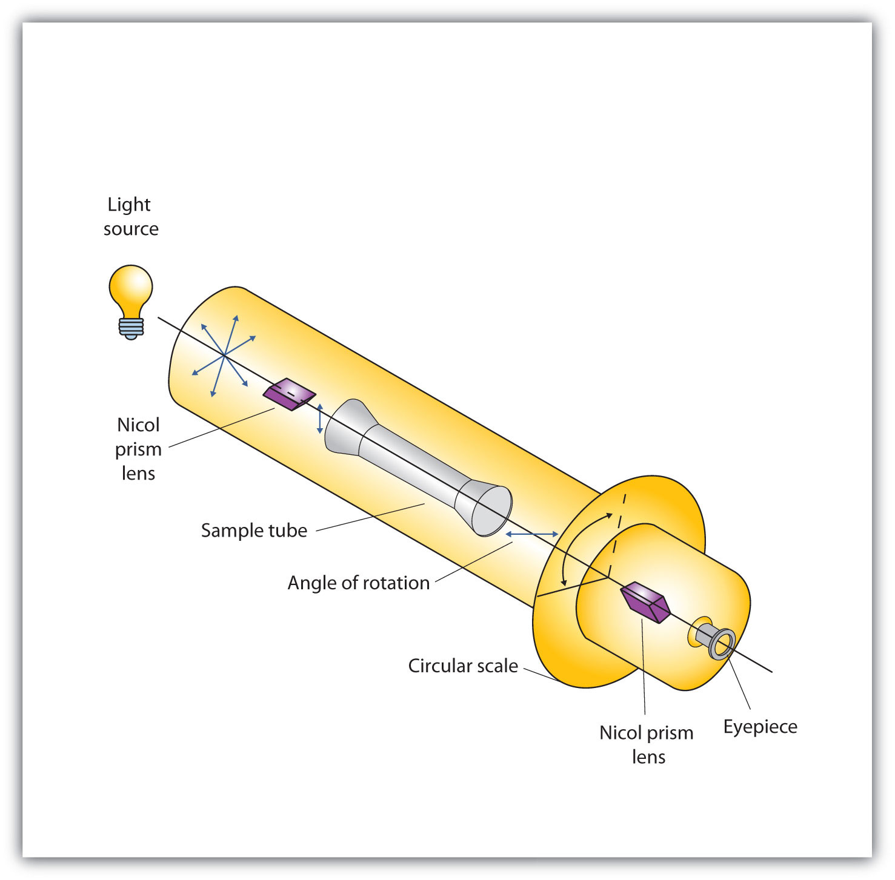

The naturally occurring monosaccharides contain three to seven carbon atoms per molecule. Monosaccharides of specific sizes may be indicated by names composed of a stem denoting the number of carbon atoms and the suffix -ose. For example, the terms triose, tetrose, pentose, and hexose signify monosaccharides with, respectively, three, four, five, and six carbon atoms. Monosaccharides are also classified as aldoses or ketoses. Those monosaccharides that contain an aldehyde functional group are called aldosesA monosaccharide that contains an aldehyde functional group.; those containing a ketone functional group on the second carbon atom are ketosesA monosaccharide that contains a ketone functional group on the second carbon atom.. Combining these classification systems gives general names that indicate both the type of carbonyl group and the number of carbon atoms in a molecule. Thus, monosaccharides are described as aldotetroses, aldopentoses, ketopentoses, ketoheptoses, and so forth. Glucose and fructose are specific examples of an aldohexose and a ketohexose, respectively.
Draw an example of each type of compound.
Solution
The structure must have five carbon atoms with the second carbon atom being a carbonyl group and the other four carbon atoms each having an OH group attached. Several structures are possible, but one example is shown.
The structure must have four carbon atoms with the first carbon atom part of the aldehyde functional group. The other three carbon atoms each have an OH group attached. Several structures are possible, but one example is shown.
Draw an example of each type of compound.
an aldohexose
a ketotetrose
The simplest sugars are the trioses. The possible trioses are shown in part (a) of Figure 16.2 "Structures of the Trioses"; glyceraldehyde is an aldotriose, while dihydroxyacetone is a ketotriose. Notice that two structures are shown for glyceraldehyde. These structures are stereoisomersAn isomer that has the same structural formula but differs in the arrangement of atoms or groups of atoms in three-dimensional space., isomers having the same structural formula but differing in the arrangement of atoms or groups of atoms in three-dimensional space. If you make models of the two stereoisomers of glyceraldehyde, you will find that you cannot place one model on top of the other and have each functional group point in the same direction. However, if you place one of the models in front of a mirror, the image in the mirror will be identical to the second stereoisomer in part (b) of Figure 16.2 "Structures of the Trioses". Molecules that are nonsuperimposable (nonidentical) mirror images of each other are a type of stereoisomer called enantiomersStereoisomers that are nonsuperimposable mirror images of each other. (Greek enantios, meaning “opposite”).
Cis-trans (geometric) isomers were discussed in Chapter 13 "Unsaturated and Aromatic Hydrocarbons", Section 13.2 "Cis-Trans Isomers (Geometric Isomers)". These are another type of stereoisomers.
Figure 16.2 Structures of the Trioses
(a) D- and L-glyceraldehyde are mirror images of each other and represent a pair of enantiomers. (b) A ball-and-stick model of D-glyceraldehyde is reflected in a mirror. Note that the reflection has the same structure as L-glyceraldehyde.
A key characteristic of enantiomers is that they have a carbon atom to which four different groups are attached. Note, for example, the four different groups attached to the central carbon atom of glyceraldehyde (part (a) of Figure 16.2 "Structures of the Trioses"). A carbon atom that has four different groups attached is a chiral carbonA carbon atom that has four different groups attached to it.. If a molecule contains one or more chiral carbons, it is likely to exist as two or more stereoisomers. Dihydroxyacetone does not contain a chiral carbon and thus does not exist as a pair of stereoisomers. Glyceraldehyde, however, has a chiral carbon and exists as a pair of enantiomers. Except for the direction in which each enantiomer rotates plane-polarized light, these two molecules have identical physical properties. One enantiomer has a specific rotation of +8.7°, while the other has a specific rotation of −8.7°.
H. Emil Fischer, a German chemist, developed the convention commonly used for writing two-dimensional representations of the monosaccharides, such as those in part (a) of Figure 16.2 "Structures of the Trioses". In these structural formulas, the aldehyde group is written at the top, and the hydrogen atoms and OH groups that are attached to each chiral carbon are written to the right or left. (If the monosaccharide is a ketose, the ketone functional group is the second carbon atom.) Vertical lines represent bonds pointing away from you, while horizontal lines represent bonds coming toward you. The formulas of chiral molecules represented in this manner are referred to as Fischer projections.
The two enantiomers of glyceraldehyde are especially important because monosaccharides with more than three carbon atoms can be considered as being derived from them. Thus, D- and L-glyceraldehyde provide reference points for designating and drawing all other monosaccharides. Sugars whose Fischer projections terminate in the same configuration as D-glyceraldehyde are designated as D sugarsA sugar whose Fischer projection terminates in the same configuration as D-glyceraldehyde.; those derived from L-glyceraldehyde are designated as L sugarsA sugar whose Fischer projection terminates in the same configuration as L-glyceraldehyde..
By convention, the penultimate (next-to-last) carbon atom has been chosen as the carbon atom that determines if a sugar is D or L. It is the chiral carbon farthest from the aldehyde or ketone functional group.
A beam of ordinary light can be pictured as a bundle of waves; some move up and down, some sideways, and others at all other conceivable angles. When a beam of light has been polarized, however, the waves in the bundle all vibrate in a single plane. Light altered in this way is called plane-polarized light. Much of what chemists know about stereoisomers comes from studying the effects they have on plane-polarized light. In this illustration, the light on the left is not polarized, while that on the right is polarized.
Sunlight, in general, is not polarized; light from an ordinary light bulb or an ordinary flashlight is not polarized. One way to polarize ordinary light is to pass it through Polaroid sheets, special plastic sheets containing carefully oriented organic compounds that permit only light vibrating in a single plane to pass through. To the eye, polarized light doesn’t “look” any different from nonpolarized light. We can detect polarized light, however, by using a second sheet of polarizing material, as shown here.
In the photo on the left, two Polaroid sheets are aligned in the same direction; plane-polarized light from the first Polaroid sheet can pass through the second sheet. In the photo on the right, the top Polaroid sheet has been rotated 90° and now blocks the plane-polarized light that comes through the first Polaroid sheet.
Certain substances act on polarized light by rotating the plane of vibration. Such substances are said to be optically active. The extent of optical activity is measured by a polarimeter, an instrument that contains two polarizing lenses separated by a sample tube, as shown in the accompanying figure. With the sample tube empty, maximum light reaches the observer’s eye when the two lenses are aligned so that both pass light vibrating in the same plane. When an optically active substance is placed in the sample tube, that substance rotates the plane of polarization of the light passing through it, so that the polarized light emerging from the sample tube is vibrating in a different direction than when it entered the tube. To see the maximum amount of light when the sample is in place, the observer must rotate one lens to accommodate the change in the plane of polarization.
Figure 16.3 Diagram of a Polarimeter
Some optically active substances rotate the plane of polarized light to the right (clockwise) from the observer’s point of view. These compounds are said to be dextrorotatory; substances that rotate light to the left (counterclockwise) are levorotatory. To denote the direction of rotation, a positive sign (+) is given to dextrorotatory substances, and a negative sign (−) is given to levorotatory substances.
What is a chiral carbon?
Describe how enantiomers differ.
A chiral carbon is a carbon atom with four different groups attached to it.
Enantiomers are mirror images of each other; they differ in the arrangements of atoms around a chiral carbon.
Identify each sugar as an aldose or a ketose and then as a triose, tetrose, pentose, or hexose.
D-glucose
L-ribulose
D-glyceraldehyde
Identify each sugar as an aldose or a ketose and then as a triose, tetrose, pentose, or hexose.
dihydroxyacetone
D-ribose
D-galactose
Identify each sugar as an aldose or a ketose and then as a D sugar or an L sugar.
Identify each sugar as an aldose or a ketose and then as a D sugar or an L sugar.